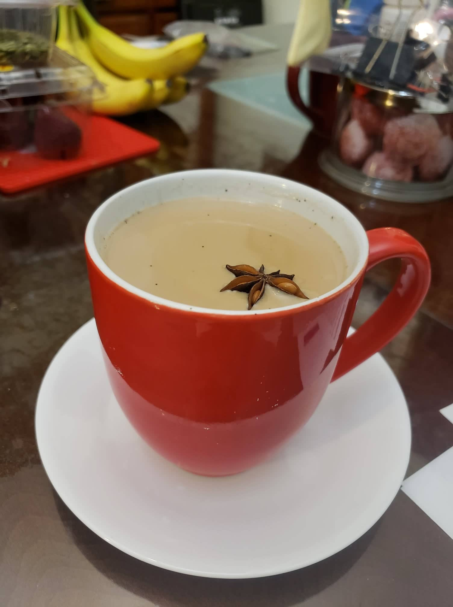

Chai

Ingredients:
- 5-7 Green cardamom pods
- 3-4 Whole cloves
- 1-2 Star anise
- 5-7 Whole black peppercorns
- 1 cup Water
- 2-3 slices Ginger
- 1/2 stick Cinnamon, split lengthwise
- 1-2 tbsp Black tea (1-2 teabags)
- 1 cup Milk
- 2-3 tsp Sugar, or to taste
Instructions:
- Lightly crush cardamom pods, whole cloves, star anise and peppercorns, and place in a small pot with 1 cup of water. Add ginger, cinnamon and black tea. Optionally, muddle the ginger a bit right in the pot.
- Bring to a boil and turn the off heat and let it steep for 10 minutes or more.
- Add your choice of milk. Bring to a simmer once more, turn off the heat.
- Stir in the sugar, adding more sugar to taste. If it tastes bitter, it needs more sweetener. Strain into a chai glass or mug.
- Optionally, after straining it pour from the cup into another container from a distance and then pour back into the cup from a distance. Repeat until frothy to your preference.